operanthouseのヘッダー
Kitaya lab
オペラントハウスの使い方
この章ではオペラントハウスの使い方を解説するため、タッチパネル仕様のオペラントハウスでSpacial discimination課題を行って行きます。
チャンバーに床敷き深さが1cmになるように入れ、餌も入れます。
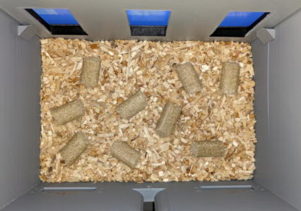
床敷きトレイを奥まで入れます。
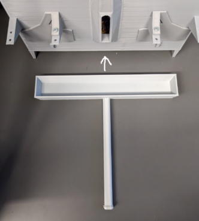
給水アームの設定
オペラントハウスを置く場所を決めたらその手前に両面テープでWaterArmMatを貼ります。向きは絶壁側が奥を向くようにして下さい。
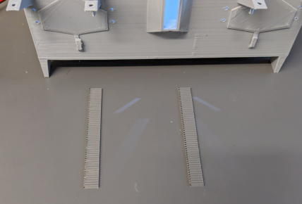
OperantHouseのソフトを起動し、給水アームのサーボを接続し、ServoウィンドウのCh3 Inの値を50にしてInボタンを押します。
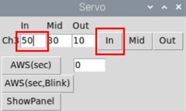
水ボトルホルダーのネジを外し、これくらいの角度にして再び取り付けて下さい。
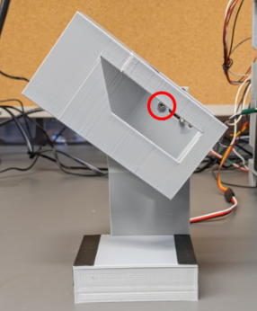
水ボトルを入れてノズル先端が写真の位置になるように給水アームを置いて下さい（この位置が給水アームの理想的な位置です）。
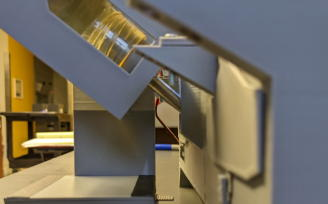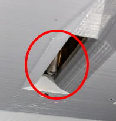
Middle angleを決めます。ノズルの先端が写真の位置くらいになるよう(マウスからアクセス出来ない位置)、Middle angleの値を調節してください。
写真では28にしました。
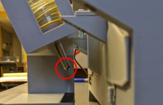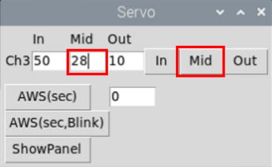
Out angleを決めます。In-Midの角度差とMid-Outの角度差は同じにするのが理想なのでOut angleは6にします(正解時と不正解時のノイズの長さを等しくするため)。
Outボタンを押して給水瓶がチャンバーにぶつからないか確認して下さい。
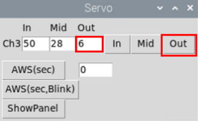
実験パラメータの設定
Settingで明期と暗期の切り替え時間、課題の開始時間を設定し、OKを押します(実験開始時間を複数入力すると1日複数回セッションを行う事が出来ます)。
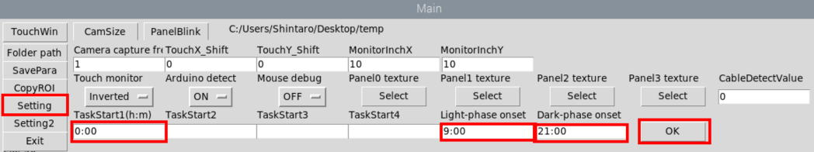
Setting2の設定も行います。
実験結果をメールで受け取りたい場合はRecipient addressにメールを受信したいアドレスを記入してください。またデバイス名も記入してください。
なおデフォルトでは練習用のgoogleアカウント(operanthousepractice@gmail.com)のSMTPサーバーを利用してメールを送信していますが、このアカウントは誰もがアクセス可能なアカウントなので、もし実験結果を他者に見られたくない場合はご自身でSMTPサーバーを立ち上げてください。サーバーの立ち上げ方はTipsで解説しています。
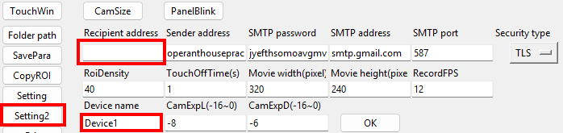
Setting2では他の実験パラメータも変更できますが、特に理由がない限りデフォルトの値を使ってください。各パラメータの説明は以下の通りです。
RoiDensity: タッチ検出ROIの中にある検出ポイントの間隔。低い数値を入れると検出ポイントの密度が上がります。
TouchOffTIme(s): パネルをタッチした直後にROIを不活性化させる時間(秒)。罰等で急にチャンバー内が明るくなるとROIが誤検出する可能性があるので一時的に検出を向こうにする機能です。
Movie width/height: 録画する動画の解像度です。
RecordFPS: 録画する動画のフレームレートです(frame / sec)。低いほど動画のデータサイズが小さくなりますが動きがカクカクになります。
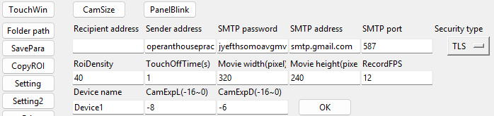
実験結果のデータを入れるフォルダを作り、Folder pathボタンで指定します。
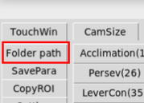
※操作モニターを使っている場合、選択ダイアログがタッチパネル側のモニターに表示されることがあるので、その場合、タスクバーに表示されているChoose Directoryを右クリックしてmaximizeを押すと操作モニタ側にダイアログが表示されます。
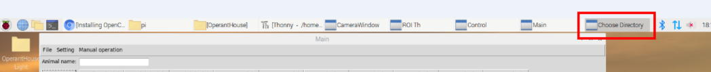
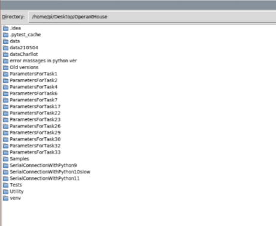
パネルの設定
SpatialDiscrimination課題のボタンをクリックします。
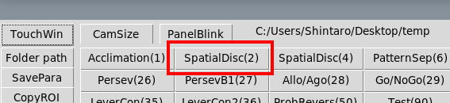
初めて課題2を行う場合、パネルの位置合わせを行う必要があります。AdjustPanelボタンをクリックします。
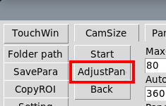
TouchWinボタンをクリックするとタッチウィンドウに十字マークが出ていると思います。この十字は上下左右ボタンで動きます。またCoarseを押すと粗動、FineModeを押すと微動になります。

最初は左パネルの左上座標を設定するので給水スリットから覗きながら、十字がパネルマスクの左パネルの左上の位置と合うように位置を調整し、Setボタンをクリックします。
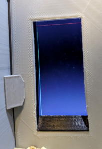
同様にパネルの右下を合わせSetボタンを押します。
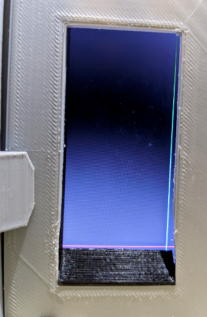
今回は3パネルの課題なので次のパネルを設定するか聞かれたらYesを選びます。そして同様に中央パネル、右ﾊﾟﾈﾙを設定し、Noを押します。
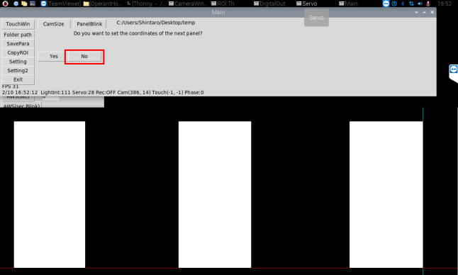
もし設定したパネルの位置を確認したい場合はServoウィンドウのShowPanelボタンで確認できます。
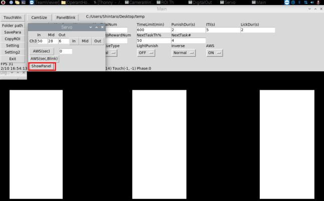
カメラの露光時間の設定
※一部のUSBカメラのみこの設定は反映されます。カメラの映像がサチュレーションしない限り、この設定は行わなくても大丈夫です。
次にカメラの露光時間を調整するため、Setting2を開きましょう。
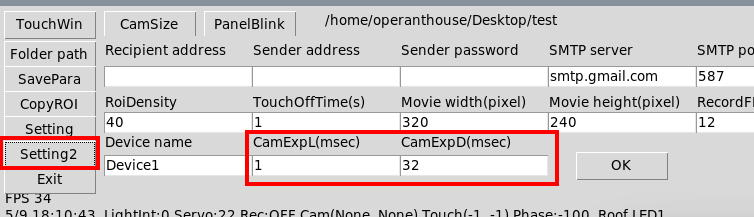
Camera exposure Lightは明期の露光時間、Camera exposure Darkは暗期の露光時間です。大きい値を入れると映像が明るくなります。値を調整して右の「OK」ボタンを押すと結果が反映されるので、ちょうどよい見え方になるまで値を調整してください（少数も入力できます）。
また明期の照明と暗期の照明はDigitalOutウィンドウのCh13を押すことで切り替えられます。
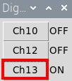
ノーズポークの検出範囲の設定
露光時間の調整が終わったら次にパネルへのタッチと水ノズルへのアクセスを検出するROIの位置を調整します。作業しやすいよう、CamSizeボタンを押し、カメラウィンドウを拡大しましょう(もう一度押すと元に戻ります)。

カメラウィンドウにあるROIは端をクリックすると動かせるようになるので位置を調整してもう一度クリックして位置を決めて下さい（リモートディスクトップだと反応が悪いですが何度もクリックしてみてください）。
ROI#0は左、#1は中央,#2は右ﾊﾟﾈﾙのボトム上に置き、#19は水スリットの位置に置きます。
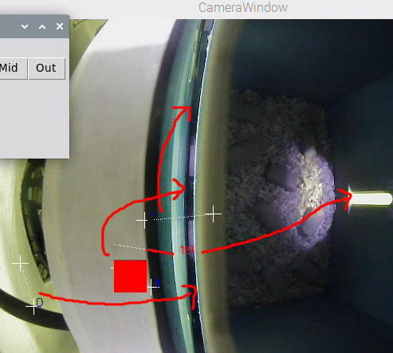
次にROIの感度を調整します。
パネルタッチ検出用のROI#0-2と水スリットへのノーズポーク検出用のROI#19は見た目は似てますが、検出様式や感度設定が異なっています。
パネルタッチ検出用のROI#0-2は5秒間同じ場所にあると自動的にバックグラウンドを調整します。
マウスの体がROIに入ると検出ポイント（ドット）の輝度が変化するのですが、その変化量がAの設定値より大きければマウスの体が重なったと見なし、赤くなります（Darkは天井照明OFF、Lightは天井照明ONの場合の数値）。この赤いドットの数がBの値以上になったらそのROIにマウスが侵入したとみなしてROIの数字が赤くなり、対応するパネルにタッチしたと見なします。
＜アルゴリズムの解説＞
それに対して水スリット用のROI#19はAWSで長時間マウスの存在を検出し続ける必要があるので自動的にバックグラウンドを調整する機能はありません。
代わりに手動で輝度の閾値を数値でCで指定する必要があります（これらの値より輝度が低い=黒い場合、マウスの体が重なったとみなします）。
この閾値の決め方ですが、ぎりぎり誤検出しない値よりさらに30低い値がちょうど良いです。
またDのボタンを押すと手動で一時的に検出状態にできます。
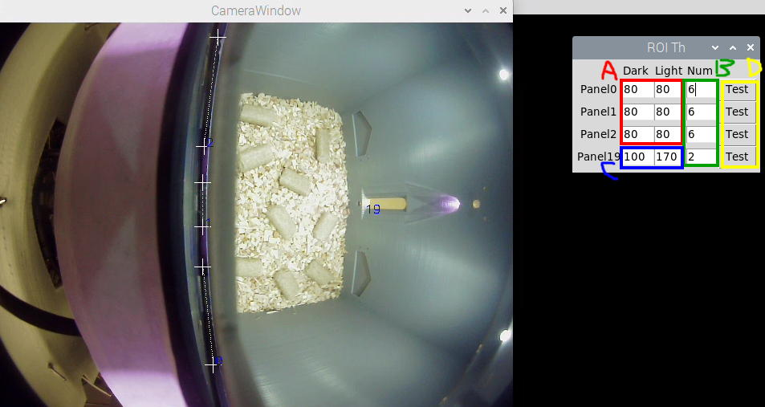
課題パラメータの設定
次に課題パラメータを以下のように設定します。詳細はここを見て下さい。
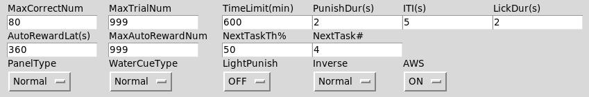
課題パラメータはStartボタンを押すと保存されますが、Backボタンを押すと保存されないので念のためこの時点でSaveParaボタンを押してパラメータを保存します。
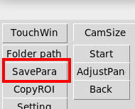
マウスを入れてStartボタンを押すと課題待機状態になり、Settingで指定した開始時間に課題が自動的に開始されます（マウスのハンドリングは不要）。
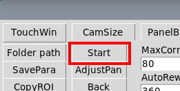
タッチウィンドウ以外に余計な物を表示させない為、デスクトップのアイコンはタッチウィンドウの下に隠し、オペラントハウスの他のウィンドウは最小化して見えなくしてください。
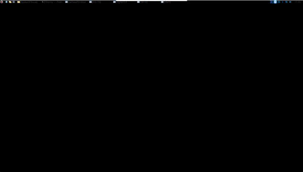
課題終了後そのまま何もしなければ再び同じ時間に課題が開始されます。オペラントハウスを終了したい場合はExitボタンを押します。
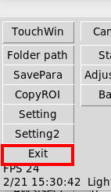